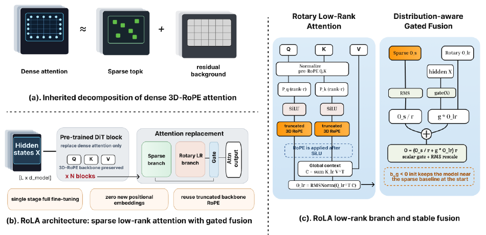
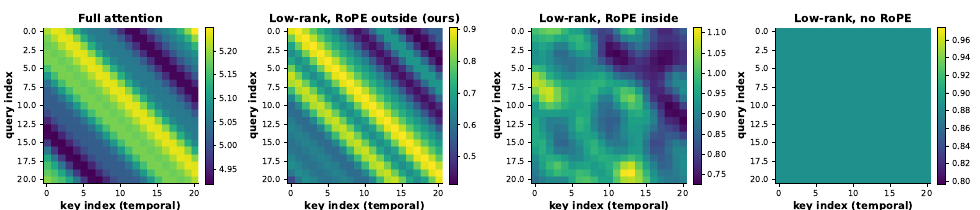
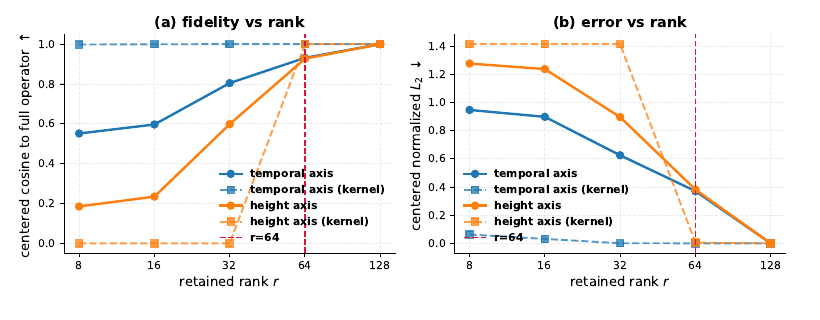

RoLA：把 3D-RoPE 塞进线性注意力——解「RoPE 两难」的旋转低秩补偿分支

矛盾
RoPE 两难:线性注意力要「与 query 无关、可复用的全局摘要」,3D-RoPE 要「位置相关的旋转」。先旋转再过非线性 → 二者不对易 → 摘要被绝对位置污染。
解法
把 RoPE 放到非线性外面(先 SiLU、再旋转)+ 复用预训练 RoPE 频率表的前 r 个坐标(r=64)。真正的跨 token 线性聚合 + 相对几何,零新位置参数。
验证
outside-RoPE 的位置核紧贴全注意力带状衰减,shift 残差 $1.8\times10^{-5}$(inside $3.7\times10^{-1}$);rank 到 64 保真度饱和(cos 0.93)。
结果
Wan2.1-14B-720P 90% 稀疏:VBench 逼近稠密、端到端 2.63×(H100)。是 SparkDiffusion 的默认稀疏模块。
1. 出发点 (Motivation)
视频 DiT 的稠密时空自注意力是 \(O(L^2)\),序列一长(\(L\gtrsim 10^4\))就成推理瓶颈。稀疏注意力只算一小撮 query–key 交互来降本,但激进稀疏会丢掉「弱但整体重要」的长程上下文,损伤语义一致性、运动连贯、场景布局。于是有了稀疏–线性混合(sparse-linear hybrid):给稀疏局部分支旁边挂一条便宜的全局线性分支,把丢掉的全局上下文捞回来(SLA、SALAD 等)。
线性注意力便宜的关键在于:它能算一个与 query 无关的全局摘要 \(C=\sum_q \phi(k_q)v_q^\top\),一次算好、所有 query 复用——这就把 \(O(L^2)\) 降成 \(O(L)\)。但视频 DiT 用 3D RoPE 编码位置:它把 head 维切给时/空三个轴,用位置相关的正交旋转 \(R(p)\) 表达相对几何。RoPE 的好处是相对性(公式 (1)):
—— 翻译:$p$ 位置的 query 和 $q$ 位置的 key 之间的注意力分数,只依赖它们的相对偏移 $q-p$(因为两个旋转拼起来变成一个"差"的旋转)。这是 RoPE 的灵魂——用绝对位置的旋转,表达出相对位置的几何。
矛盾就在这儿。论文管它叫 RoPE Dilemma(RoPE 两难):
如果按常规把 RoPE 塞进线性分支——先旋转再过非线性 \(\phi\),形成 key 侧摘要 \(\sum_q \phi(R(q)k_q)v_q^\top\)——当 \(\phi\) 是逐点非线性时,旋转和非线性一般不对易,摘要就会以"无法干净地吸收进相对偏移"的方式依赖绝对位置。于是你没法同时既保住相对旋转几何、又维持一个可复用的线性时间摘要。
已有的绕法(RoPeSLR)是:干脆不做跨 token 聚合,把全局分支换成「逐 token 坐标 MLP + 可学习的绝对位置嵌入」,用绝对坐标去模仿相对衰减。能用,但两个代价:(1) 相对衰减是"模仿"出来的,不是全局分支本身表达的;(2) 丢了可复用的线性注意力视角,还多引入位置参数。
于是 RoLA 问了个更窄的问题:能不能造一个真正的线性全局分支,同时兼容 3D 相对位置结构?
术语速查
- 3D RoPE(三维旋转位置编码)
- 把注意力 head 维切给时间/高/宽三个轴,每个 token 按其时空坐标做一个块对角正交旋转 $R(p)$。旋转的正交性让注意力分数只依赖相对偏移 $q-p$。
- linear attention(线性注意力)
- 把 $\text{softmax}(QK^\top)V$ 近似成 $\phi(Q)(\phi(K)^\top V)$,先算 $K^\top V$ 的全局摘要再乘 $Q$,复杂度从 $O(L^2)$ 降到 $O(L)$。关键前提:那个摘要**与 query 无关、可复用**。
- RoPE Dilemma(RoPE 两难)
- 本文命名的核心矛盾:线性注意力要「可复用摘要」、RoPE 要「位置相关旋转」;先旋转再过非线性,二者不对易,摘要被绝对位置污染。
- sparse-linear hybrid(稀疏–线性混合)
- 稀疏局部分支(抓高能尖峰)+ 线性全局分支(捞回被稀疏丢掉的平滑背景),门控融合。RoLA 属于这类,创新在全局分支的形式。
- outside/inside activation(非线性外/内)
- 指 RoPE 旋转相对逐点非线性 $\phi$ 的先后。inside = 先旋转再 $\phi$(污染);outside = 先 $\phi$ 再旋转(RoLA 的选择,保相对几何)。
- shift-invariance(平移不变 / shift 残差)
- 把一对 (query,key) 整体平移同样的偏移,注意力分数应不变(因为只看相对偏移)。shift 残差越接近 0,说明分支只依赖相对位置、不泄漏绝对位置。
- block-sparse(块稀疏)
- 把注意力矩阵切块,只算一小撮高能块。RoLA 的稀疏分支沿用现成 SLA/VMoBA,不是它的贡献。
- genuine cross-token routing(真正的跨 token 路由)
- 全局分支真的在 token 之间聚合信息($C=\sum_q \tilde k_q v_q^\top$),而不是像 RoPeSLR 那样用逐 token 坐标 MLP 伪造全局效应。
2. 方法 (Method)
RoLA 把注意力拆成两条互补分支:块稀疏分支(抓高能语义尖峰,沿用现成 SLA/VMoBA,不是贡献)+ 旋转低秩线性分支(重建平滑全局背景,是贡献)。作者反复强调:「稀疏 + 低秩」这个分解本身是前人的,RoLA 的贡献是低秩分支的形式——两个精确到位的设计选择。
2.1 旋转低秩线性分支(核心公式)
设 \(q_p^n=\text{norm}_q(q_p)\)、\(k_q^n=\text{norm}_k(k_q)\) 是主路归一化、未旋转的 query/key。低秩分支算:
—— 翻译:先用 $P_q,P_k$(rank-r 投影)把 $q,k$ 压到 r 维、过 SiLU,然后才旋转 $R_r$(注意顺序!);$C=\sum_q \tilde k_q v_q^\top$ 是把所有 key–value 压成一个 $r\times d_h$ 的「全局摘要矩阵」,每 head 只算一次;每个 query 用 $\tilde q_p^\top C$ 去读它,复杂度 $O(Lrd_h)$,对 $L$ 线性。value $v_q$ 不旋转。
有两个地方和标准线性注意力/RoPeSLR 都不同:(1) 旋转 \(R_r\) 只作用在低秩特征上(不是整个 head 维);(2) 旋转在非线性 SiLU 之后。下面两小节分别讲清这两个选择。
2.2 设计一:RoPE 放在非线性外面(RoPE Outside the Activation)
这是全文的题眼。RoLA 先做低秩投影 + SiLU,再旋转。动机是一句极干净的「职责分离」:
非线性低秩映射负责抽与位置无关的内容特征,RoPE 只当一个纯相对位置算子。当旋转在非线性之后,全局上下文 \(C\) 照样能累加一次、被所有 query 复用;位置效应只在 query 读出 \(C\) 时才出现。
反过来,如果先旋转再过非线性,旋转和逐点激活不对易,位置信息在全局聚合之前就和内容纠缠,key 侧摘要就会依赖绝对位置(附录 B.3 给了个"无法精确因子化"的阻碍论证)。
代码里这个顺序一目了然——F.silu(proj) 在前,_apply_rope_rank 在后:
repo/sparkdiffusion/networks/wan_rola_attention.py:L366-L391 — 低秩分支:SiLU 在前、RoPE 在后(outside activation)
def _lowrank_attn(self, q_normed_bhld, k_normed_bhld, v_bhld, freqs):
# 1) 低秩投影 + 非线性 —— φ(P_q q^n),抽"位置无关的内容特征"
q_lr = F.silu(self.proj_q(q_normed_bhld)) # [B, H, L, rank]
k_lr = F.silu(self.proj_k(k_normed_bhld)) # [B, H, L, rank]
# 2) RoPE 在 SiLU 之后 —— R_r 只当"相对位置算子",不与非线性纠缠
q_lr = self._apply_rope_rank(q_lr, freqs)
k_lr = self._apply_rope_rank(k_lr, freqs)
# 3) 全局摘要 C = Σ k̃ vᵀ 累加一次;q̃ᵀC 对 L 线性,所有 query 复用同一个 C
c = k_lr.transpose(-2, -1) @ v_bhld # [B, H, rank, D]
out = q_lr @ c # [B, H, L, D]
return F.rms_norm(out, [out.shape[-1]])
机制实验(§3)直接量化了这个选择的对错:outside 顺序的位置核紧贴全注意力的带状相对衰减、shift 残差近零;inside 顺序泄漏绝对位置。这不是"消融里略好",而是"只有这一个顺序在结构上正确"。
2.3 设计二:截断旋转频率表(Rank Truncation)
投影后的特征只有 \(r\) 维(\(r=64\ll d_h=128\))。RoPE 作用在 2D 旋转对上,所以低秩分支只能承载 \(r/2\) 个旋转对,装不下完整的 \(d_h\) 维频率表。RoLA 的做法:直接复用预训练 RoPE 频率表在骨干原生排序下的前 \(r\) 个坐标(即 \(r/2\) 个完整旋转对),不重排、不重学、不加任何位置参数。
代码里就是 rope_dim = min(r // 2, freqs.shape[-1]) 一句——只取前 \(r/2\) 个频率,其余维度不旋转:
repo/sparkdiffusion/networks/wan_rola_attention.py:L344-L364 — 截断 RoPE:只旋转前 r/2 个坐标对,复用骨干 freqs
r = self.rola_rank
rope_dim = min(r // 2, freqs.shape[-1]) # 只取前 r/2 个旋转对
freqs_r = freqs[:L, :rope_dim].to(x.dtype) # 复用骨干原生 freqs,不重排不重学
cos, sin = torch.cos(freqs_r), torch.sin(freqs_r)
x_rot = x[..., : 2 * rope_dim] # 前 2*rope_dim 维参与旋转
x1, x2 = x_rot.unflatten(-1, (-1, 2)).unbind(-1) # 交错配对 (x0,x1),(x2,x3)...
out = torch.empty_like(x_rot)
out[..., 0::2] = x1 * cos - x2 * sin # 标准 2D 旋转
out[..., 1::2] = x1 * sin + x2 * cos
if 2 * rope_dim < r: # rank 富余的尾部不旋转,直接拼回
out = torch.cat([out, x[..., 2 * rope_dim:]], dim=-1)
为什么 \(r=64\) 够?直觉是:全局分支主要建模平滑可压缩的背景,其位置结构能被一个缩减的旋转子空间抓住。§3 的保真度扫描证实:cos 相似度到 \(r=64\) 就饱和(温度轴 0.55→0.80→0.93,高度轴 0.19→0.60→0.93)。
2.4 分布感知门控融合
稀疏输出 \(O^s\) 和全局低秩输出 \(O^{lr}\) 融合前要做方差稳定。用一个逐 token 标量门 \(g=\sigma(XW_g+b_g)\in(0,1)^{L\times1}\),并用稀疏输出的 RMS 作为逐 token 尺度参考:
—— 翻译:门只是一个标量,只调低秩分支的幅度、不改它的通道方向。$r_p$ 是稀疏输出的 RMS——除以它把稀疏分支归一化,加上门控的全局修正后再乘回去,还原原始 token 尺度。门偏置 $b_g$ 初始化为负,所以模块起点几乎是纯稀疏基线,低秩贡献在微调中逐渐引入。
代码里 gate_bias 初始化 -1.946(\(\sigma(-1.946)\approx0.125\))正是这个"负偏置、初始近稀疏":
repo/sparkdiffusion/networks/wan_rola_attention.py:L261-L269 — 新参数 Θ_new 初始化:proj kaiming、gate 零权重+负偏置
self.proj_q = nn.Linear(h, r, bias=False) # P_q
self.proj_k = nn.Linear(h, r, bias=False) # P_k
self.gate_proj = nn.Linear(h, 1, bias=False) # W_g
self.gate_bias = nn.Parameter(torch.full((1, num_heads, 1, 1), -1.946)) # b_g < 0
nn.init.kaiming_uniform_(self.proj_q.weight, a=math.sqrt(5))
nn.init.kaiming_uniform_(self.proj_k.weight, a=math.sqrt(5))
nn.init.zeros_(self.gate_proj.weight) # 门权重零初始化 → 起点纯稀疏
3. 结论 (Key findings)
3.1 机制验证:只有 outside-RoPE 同时"位置感知 + 平移不变"
这是 RoLA 最有说服力的部分——不靠下游指标,直接在真实 Wan Q/K 特征上量化位置核。

Table 2 把它量化成两个数:一个分支要保相对位置,应该既对相对偏移有非平凡依赖(offset range 大)、又对整体平移几乎不变(shift 残差近零)。
| RoPE 顺序 | Shift 残差 ↓ | Offset range(位置感知) | 行为 |
|---|---|---|---|
| No RoPE | 0.0 | 0.0 | 位置盲 |
| Inside activation | \(3.7\times10^{-1}\) | 0.47 | 泄漏绝对位置 |
| Outside activation(本文) | \(\mathbf{1.8\times10^{-5}}\) | 0.47 | 相对 / 平移不变 |
outside 和 inside 有一样的 offset range(0.47,都位置感知),但 shift 残差差了四个数量级——inside 把绝对位置泄漏进了摘要,outside 没有。这就是 RoPE 两难的实证解决。
3.2 rank 到 64 保真度饱和

3.3 生成质量:90% 稀疏逼近稠密,2.63× 加速
Table 4:在 Wan2.1-1.3B(480p)和 14B(720p)上,匹配 90% 稀疏度,RoLA 在多数 VBench 维度和帧级保真(PSNR/SSIM/LPIPS)上同时优于 VSA、SLA、RoPeSLR,且延迟最低。
| 模型 | 方法 | SC↑ | IQ↑ | AQ↑ | PSNR↑ | LPIPS↓ | 延迟↓ | 稀疏 |
|---|---|---|---|---|---|---|---|---|
| 14B-720P | Full(稠密) | 0.9698 | 0.6996 | 0.6319 | – | – | 1075.7s | 0% |
| 14B-720P | VSA | 0.9010 | 0.6012 | 0.5998 | 24.27 | 0.130 | 717.1s | 90% |
| 14B-720P | SLA | 0.9481 | 0.6398 | 0.6052 | 26.02 | 0.124 | 601.0s | 90% |
| 14B-720P | RoPeSLR | 0.9601 | 0.6627 | 0.6102 | 26.33 | 0.118 | 598.3s | 90% |
| 14B-720P | RoLA | 0.9629 | 0.6783 | 0.6294 | 28.65 | 0.108 | 409.3s | 90% |
409.3s vs 稠密 1075.7s = 端到端 2.63×(H100,DiT 去噪部分)。尤其 PSNR 28.65 明显高于 RoPeSLR 的 26.33——真正的跨 token 路由比"绝对坐标模仿"更接近稠密输出,和 §3.1 的机制保真度一致。
3.4 消融:SiLU 最优,rank 单调,outside 唯一正确
- 激活函数(Table 6,用融合输出对稠密输出的对齐 rel-L2 度量,稀疏-only 基线是 0.612):SiLU 0.521 最低,GELU 0.522、ReLU 0.534、Tanh/Identity 0.525——平滑非线性有益,但差距不大,说明"outside 顺序"比"具体用哪个非线性"重要得多。
- rank(Table 5):下游 VBench 随 rank 单调升到 64,之后边际——和算子保真度(Fig 4)完全同步。
- RoPE 顺序(Table 2):只有 outside 同时满足两条件。
4. 实现细节 (Implementation notes)
-
单阶段全量微调,不是两阶段(wan_rola_attention.py:L278-L287):新参数 \(\Theta_{new}=\{P_q,P_k,W_g,b_g\}\)——proj kaiming 初始化、\(W_g\) 零、\(b_g\) 负;替换注意力模块后和骨干一起联合优化(骨干用小学习率),在标准 flow-matching 目标下训。这和 RoPeSLR 的两阶段策略不同(§E.1 讨论了理由)。注意代码里
init_weights()专门重设这些参数,因为WanModel.init_weights()会用 xavier 覆盖所有 Linear——一个容易踩的初始化覆盖坑。 -
推理用两个融合 Triton kernel,按 even/odd 拆权重(§4.5):因为 RoPE 作用在偶/奇坐标对上,把每个投影权重离线拆成偶行和奇行,当成两个纯 2D matmul 处理,保持稠密矩阵乘、避免不规则索引。Kernel 1 累加 \(C_{even}=\sum \tilde k_q^{even}v_q^\top\)、\(C_{odd}=\sum \tilde k_q^{odd}v_q^\top\);Kernel 2 形成 \(O_p^{lr}=\tilde q_p^{even}C_{even}+\tilde q_p^{odd}C_{odd}\) 并做逐 token RMSNorm。论文声明这"精确复现公式 (2)(3)"。
-
RMSNorm 放在聚合之后(wan_rola_attention.py:L391):
F.rms_norm(out, ...)在 \(\tilde q^\top C\) 之后,只做数值稳定;论文特意说明相对位置分析针对的是 pre-RMSNorm 的 logits,RMSNorm 只是读出通道上的稳定层,不影响相对几何结论。 -
value 不旋转(wan_rola_attention.py:L388):\(C=\tilde k^\top v\) 里
v_bhld直接用骨干 value,没有过 RoPE——只有 \(\tilde q,\tilde k\) 带旋转,符合公式 (3) 里"\(v_q\) is not rotated"。 -
训练/推理走不同稀疏 kernel(wan_rola_attention.py:L293-L327):训练用外部 SLA 的 BF16 精确 kernel(需环境变量
SLA_SRC指向外部 checkout,没设直接RuntimeError),推理走fused_forward里的自研 Triton 融合路径。这份开源代码不自带稀疏训练 kernel。
paper↔code 说明(非矛盾):RoLA 论文和 sparkdiffusion-2026 共用同一个 SparkDiffusion 仓库(同一 Alibaba 团队),WanSelfAttentionRoLa 就是两篇论文共享的实现。所以这里引的代码和 SparkDiffusion 那篇是同一份——RoLA 是"架构",SparkDiffusion 是"用这个架构 + 蒸馏 + FP8 的完整加速栈"。没有独立的 RoLA 仓库(6 种代码发现策略全试过,论文本身只指向 SparkDiffusion repo)。
5. 批判性总结 (Critical assessment)
Strengths
- 诊断清晰、命名精准。"RoPE Dilemma"把一个真实但少被点破的结构性矛盾(旋转与非线性不对易)命名并形式化,是那种能进后续论文词汇表的概念。
- 机制验证比下游指标更硬。§3.1 不满足于"VBench 高了",而是直接量化位置核的 shift 残差(\(1.8\times10^{-5}\) vs \(3.7\times10^{-1}\),四个数量级)——把"outside 顺序正确"钉成可测量的物理性质,而非调参运气。
- 零新增位置参数。复用预训练 RoPE 频率表的前 r 个坐标,不引入 RoPeSLR 那样的可学习绝对位置嵌入——既省参数又保持和骨干同一几何尺度。
- 能力矩阵诚实(Table 1):明确列出 RoLA 相对 SLA/VSA/RoPeSLR 各占哪些格子,而不是笼统说"更好"。且反复声明"稀疏+低秩分解不是我们的贡献"、"附录里的结构性 sanity check 不是理论保证"——学术克制。
Limitations / open questions
- 只在两个 Wan 模型上验证。作者自己在 Limitations 里承认。对 HunyuanVideo、CogVideoX 等其他 3D-RoPE 骨干是否直接迁移,是开放问题。
- 附录的"证明"是 sanity check 不是定理。B.1/B.3/B.4 的命题被明确降格为"设计动机",不提供端到端生成保证。诚实,但也意味着"outside 顺序更好"最终靠的是经验证据,不是理论必然。
- r=64 与激活函数的收益都不大。Table 6 里 SiLU(0.521)和 GELU(0.522)几乎无差,rank 128 vs 64 也只边际提升——说明真正决定成败的是那个二元的"outside vs inside"顺序,而参数选择的裕度很宽(既是优点也说明可调空间有限)。
- 加速倍数是"稀疏架构"级别,不是"完整栈"级别。2.63× 是 RoLA 单独的贡献;要拿到 SparkDiffusion 那种 265×,还得叠上少步蒸馏和 FP8。RoLA 解决的是"表达能力",不是"终端质量"(见延伸阅读)。
When to use / not use
- 用:你在做视频 DiT 的稀疏–线性混合,且骨干带 3D RoPE,想要一条真正跨 token、保相对几何、不加位置参数的全局补偿分支。
- 不用:你要 training-free 的即插即用稀疏(RoLA 需要微调);或你的瓶颈是"极端稀疏下终端质量崩"而非"全局上下文表达"——那是 SparkDiffusion 的 high-sparsity trap 要解决的问题,RoLA 只提供架构底座。
延伸阅读 (Further reading)
RoLA 是"稀疏–低秩补偿"这条线里,专门解决"全局分支怎么和 3D-RoPE 兼容"的一环。把它和最相关的几篇的结论/立场并排交叉验证,能看清它在设计空间里的确切位置:
| 工作 | 全局分支怎么做 | 相对位置怎么来 | 位置参数 | 对 RoLA 的关系 |
|---|---|---|---|---|
| RoLA(本文) | 真正跨 token 线性聚合 \(C=\sum\tilde k v^\top\),RoPE 在非线性外 | 复用截断 3D-RoPE,分支本身表达 | 零新增 | — |
| RoPeSLR [14] | 放弃跨 token 聚合,逐 token 坐标 MLP | 可学习绝对位置嵌入模仿相对衰减 | 额外引入 | RoLA 的直接前身,被 RoLA 在机制保真度上超越(PSNR 28.65 vs 26.33) |
| SLA [25] | 特征图线性注意力 + proj_l 补偿 | 无 RoPE-aware 设计(×相对) | 零 | 有真跨 token,但全局分支不保相对几何 |
| VSA / FastWan [27] | 纯稀疏,无全局补偿 | — | 零 | 激进稀疏下丢长程上下文,RoLA 就是来补这块 |
| sparkdiffusion-2026 | 用 RoLA 当稀疏模块 | 同 RoLA | 同 RoLA | 上层:RoLA 解表达,SparkDiffusion 加蒸馏+FP8 解终端质量与速度 |
分歧的可能成因:RoPeSLR 用绝对坐标 MLP "模仿"相对衰减,本质是把一个相对量用绝对表示去逼近,永远差一层;RoLA 直接让分支的成对交互是相对偏移的函数(靠 outside-RoPE),所以机制保真度更高、生成也更接近稠密。SLA 有真跨 token 聚合但不做 RoPE-aware,在 3D-RoPE 视频上就丢了相对几何这一维——这正是 Table 1 能力矩阵里 SLA 在"Relative-aware global path"列打 × 的原因。
- 上层完整加速栈(RoLA + trajectory-mixed 蒸馏 + FP8,单卡 265×):sparkdiffusion-2026。
6. 研究启发 (Transferable takeaways)
- "算子顺序"可以是一等的设计变量。RoLA 的全部威力来自一个看似平凡的决定:非线性和旋转谁先谁后。很多架构里"归一化/位置编码/非线性/投影"的相对顺序被当成无所谓的细节,但当其中两个操作不对易时,顺序就决定了某个想要的不变性(这里是相对位置)能不能被保住。设计新模块时,值得专门问一句:我这几个算子两两对易吗?不对易的那对,顺序选对了吗?
- 反直觉点:线性注意力和 RoPE 的冲突,不在"线性",在"可复用摘要"。天真会以为问题是线性注意力表达力不够;RoLA 点破真正的张力是"query 无关的可复用摘要" vs "位置相关的旋转"——一旦看清是这两个属性在打架,解法(把位置效应推迟到读出时)就自然浮现。先把矛盾拆到属性层面,再找解。
- 机制级验证 > 下游指标。与其只报"VBench 高了 0.5",不如构造一个能直接测量"你声称的性质"的探针(这里是位置核的 shift 残差)。可测量的物理性质(\(1.8\times10^{-5}\) vs \(3.7\times10^{-1}\))比综合分数更能说明"为什么"有效,也更难被调参运气蒙混。
- "复用预训练结构"往往比"新学一个"更省更稳。RoLA 不学新的位置编码,直接截断复用骨干的 RoPE 频率表——零新增参数、和骨干同几何尺度、微调更稳。当你要给预训练模型加一个需要"位置感/尺度感"的新分支时,先看看能不能复用它已经学好的那套,而不是并行再学一套去对齐。
讨论 / Comments
评论托管在本仓库的 GitHub Discussions, 需 GitHub 账号。